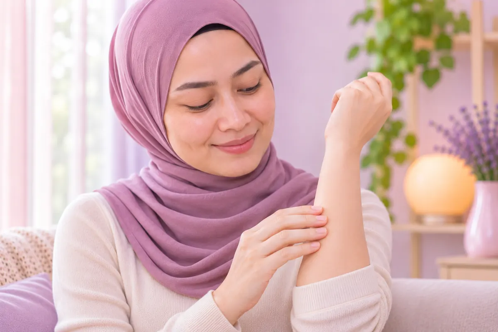
皮肤毛发指甲
235 种疾病与症状
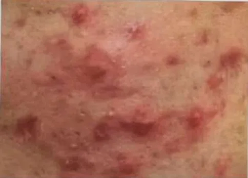
下巴长痘 丝状疣
丝状疣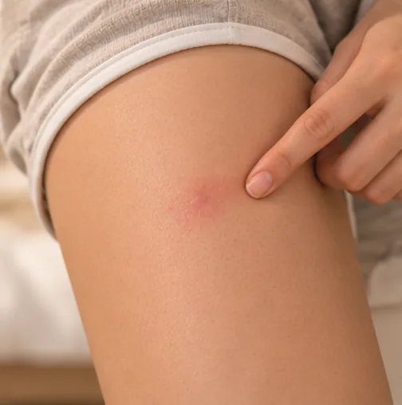
丹毒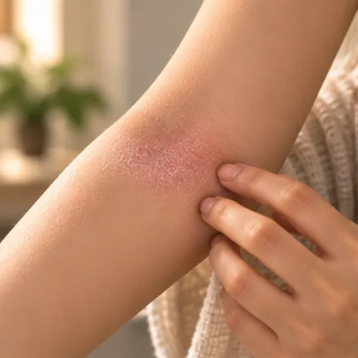
乳房湿疹- 传染性软疣
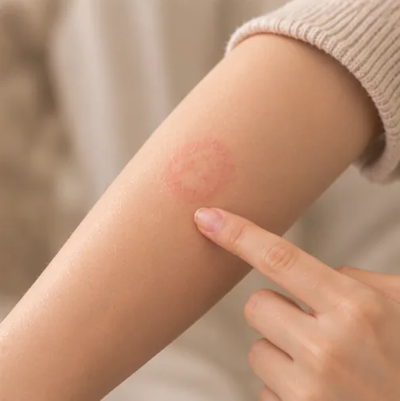
体癣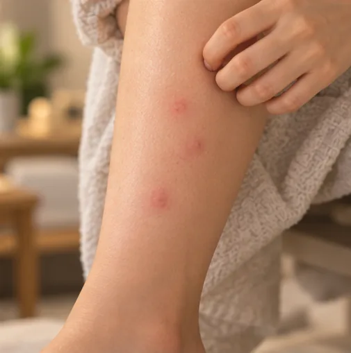
体虱病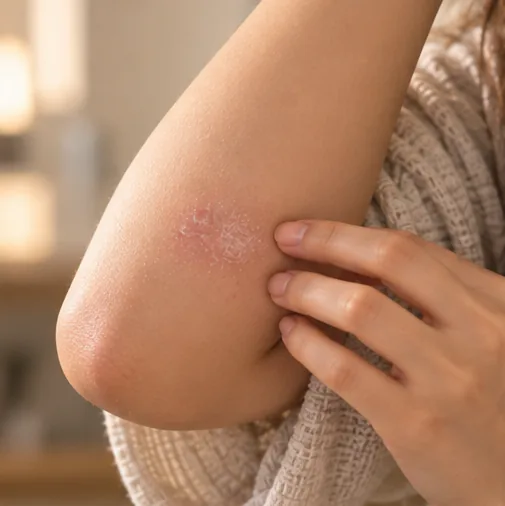
光泽苔藓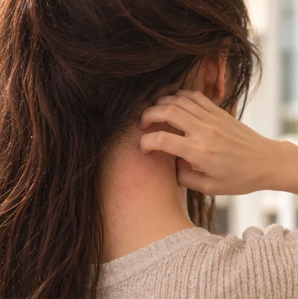
全身发痒 全身起红疹
全身起红疹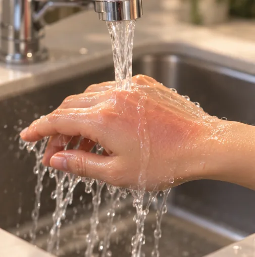
冻疮 出汗
出汗 剥脱性角质松解症
剥脱性角质松解症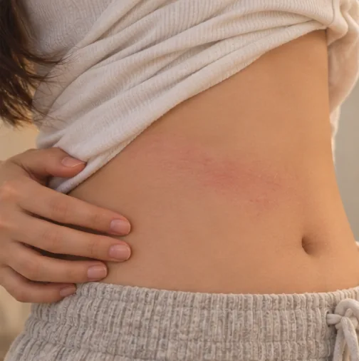
单纯疱疹- 压疮
- 口周湿疹
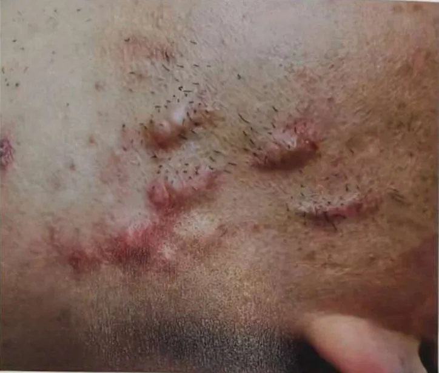
增生性瘢痕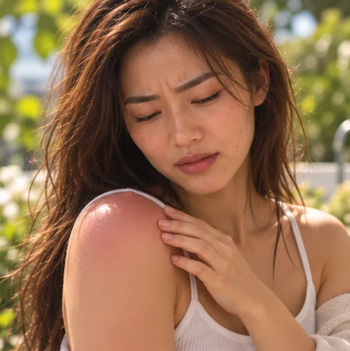
夏季皮炎- 外耳湿疹
- 多发性脂囊瘤
- 多发性脂肪瘤
- 多形红斑
- 多汗
- 多汗症
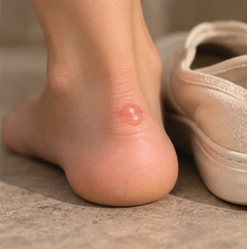
天疱疮- 头上长疙瘩
- 头上长痘痘
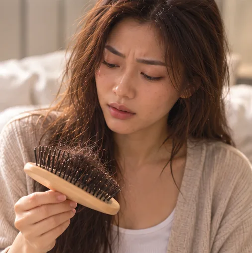
头发稀少- 头皮发红
- 头皮屑
- 头皮屑过多
- 头皮毛囊炎
- 头皮瘙痒
- 头皮癣
- 头皮长红疙瘩
- 头虱病
- 头部单纯糠疹
- 头顶脱发
- 寻常型银屑病
- 寻常疣
 小腿瘙痒
小腿瘙痒 嵌甲
嵌甲- 带状疱疹
- 干性湿疹
- 平滑肌瘤
- 急性湿疹
- 慢性湿疹
- 扁平疣
- 扁平苔藓
- 手出汗
- 手干裂
- 手心发痒
- 手心发红
- 手心脱皮
 手指发痒
手指发痒- 手指脱皮
- 手指起水泡
- 手指起皮
- 手掌起水泡
- 手掌起疙瘩
- 手汗症
- 手癣
- 手脚出汗
- 手脚脱皮
- 手部湿疹
- 指甲和肉分离
- 指甲里有黑线
- 掌跖脓疱病
- 斑丘疹
- 斑秃
- 斑驳病
 日晒斑
日晒斑 暴发性紫癜
暴发性紫癜- 月经期长痘
- 樱桃状血管瘤
- 毛发红糠疹
- 毛周角化病
- 毛囊炎
- 毛囊角化病
- 毛母质瘤
- 毛细血管出血
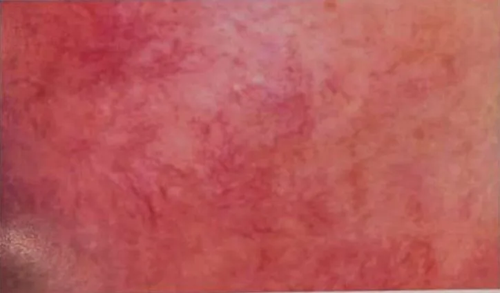
毛细血管扩张症 水疱型足癣
水疱型足癣- 汗疱疹
- 汗管瘤
- 油漆皮炎
- 湿疹
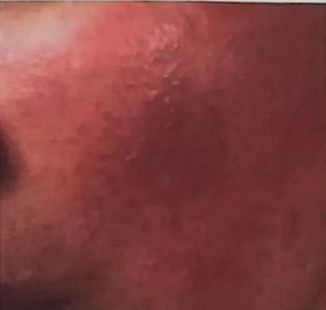
激素脸- 火激红斑
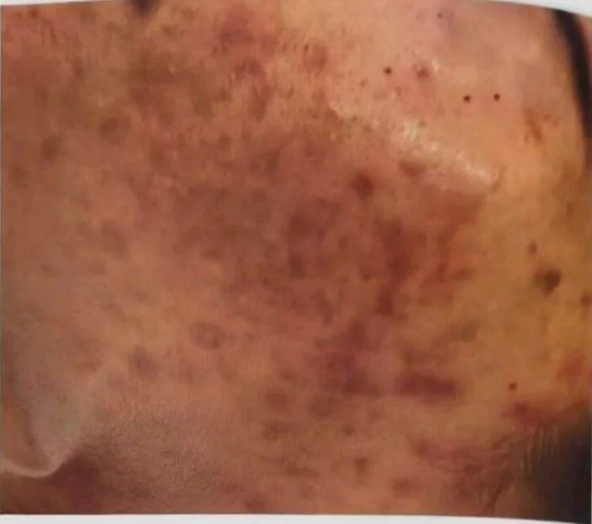
炎症后色素沉着- 特应性皮炎
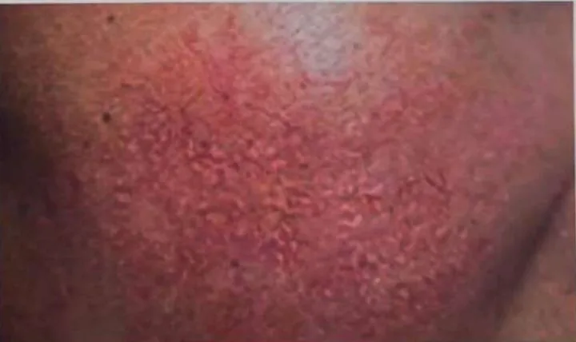
玫瑰痤疮- 玫瑰糠疹
- 环形红斑
- 甲沟炎
- 甲癣
- 甲营养不良
- 疖
- 疣
- 疥疮
- 疥疮结节
- 疱疹
- 痈
- 痒疹
- 痣
- 痤疮
- 痱子
- 瘙痒症
- 瘢痕疙瘩
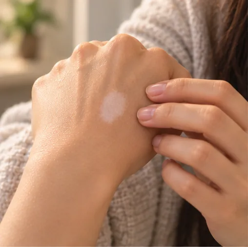
白化病- 白屑风
- 白癜风
- 白癜风病
- 白色糠疹
- 皮下出血
- 皮下硬结
- 皮下脂肪瘤
- 皮样囊肿
- 皮炎
 皮肌炎
皮肌炎- 皮肤乳头状瘤
- 皮肤发黄
 皮肤发黑
皮肤发黑- 皮肤囊肿
- 皮肤型红斑狼疮
- 皮肤干燥
- 皮肤干燥起皮
- 皮肤感染
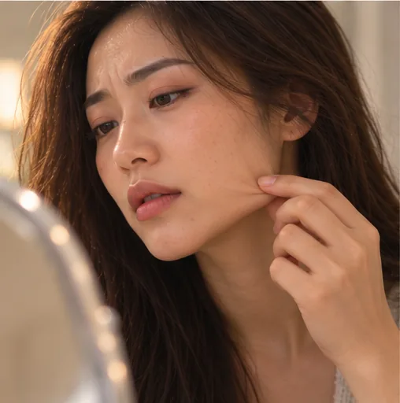
皮肤松弛- 皮肤淀粉样变
- 皮肤溃烂
- 皮肤病
- 皮肤瘙痒
- 皮肤癣菌病
- 皮肤粗糙
- 皮肤红肿
- 皮肤纤维瘤
- 皮肤角化症
- 皮肤长白斑
- 皮肤饥渴症
- 皮脂缺乏症
- 皮脂腺增生
- 皮脂腺异位症
- 皮脂腺瘤
- 皲裂性湿疹
- 眉毛长痘
- 神经性皮炎
- 离心性环状红斑
- 窝状角质松解症
- 窦道
- 粉刺
- 粟丘疹
- 糖皮质激素性皮炎
- 糜烂型足癣
- 糠疹
- 紫癜
- 红痣
- 红皮病
- 线状苔藓
- 结节性红斑
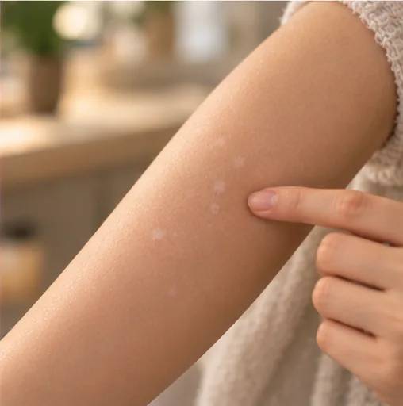
老年性白斑- 耳廓癣
- 肚脐痒
- 股癣
- 背部多汗
- 胳膊起小疙瘩
 胼胝
胼胝- 脂溢性皮炎
- 脂溢性角化病
- 脂肪瘤
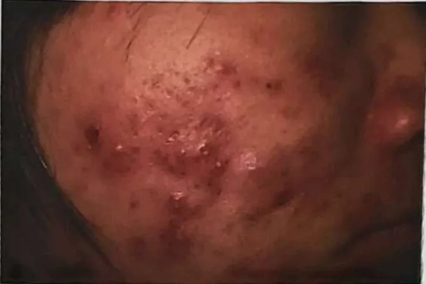
脓包型痤疮- 脓性指头炎
- 脓疱疮
- 脚上起水泡
- 脚干裂起皮
- 脚痒
- 脚破溃
- 脚背发痒
- 脚趾发痒
- 脚趾甲向内长
- 脚趾甲增厚
- 脚趾长水泡
- 脱发
- 脸颊长痘
- 腋下痒
- 腋毛癣
- 腹部长红点
 腿上长白斑
腿上长白斑- 色素性紫癜性皮肤病
- 色素沉着
- 色素脱失
- 花斑糠疹
- 藏毛囊肿
- 藏毛窦
- 蜂窝织炎
- 螨虫皮炎
- 蠕形螨病
- 血管瘤
- 表皮囊肿
- 足底发黄
- 足底瘙痒
- 足底起皮
- 足底长水泡
- 足癣
- 足裂
- 足跟干裂
- 跖疣
- 身上出现白块
- 软纤维瘤
- 银屑病
- 雄激素性秃发
- 面部发痒
- 面部发红
- 面部发红发热
- 面部发黄
- 面部发黑
- 面部干燥脱皮
- 面部长斑
- 面部长痘
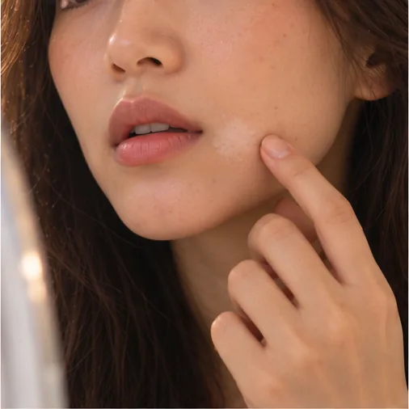
面部长白斑- 须疮
- 颈部痒
- 额头多汗
- 额头长痘
- 骶尾部藏毛窦
- 鱼鳞病
- 鲜红斑痣
- 鸡眼
 黄褐斑
黄褐斑- 黑素细胞痣
- 黑色素沉着
- 鼻头痒
- 鼻子起皮
- 鼻子长痘
- 龟裂